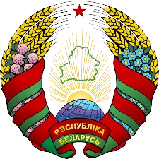
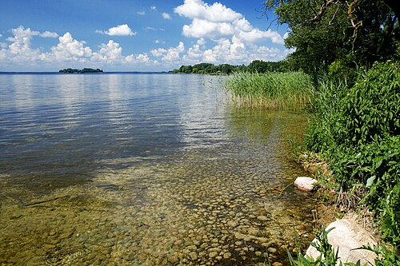
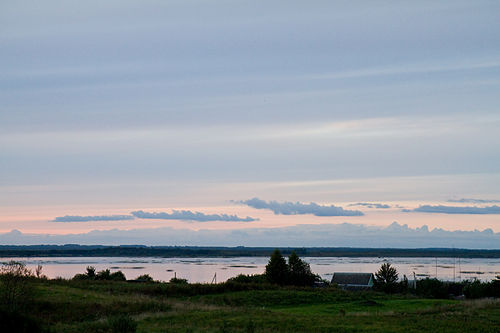
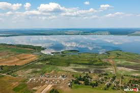
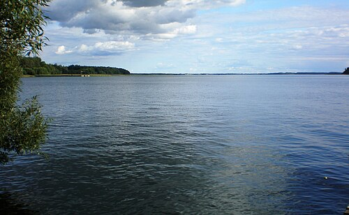

Ми́рский за́мок — оборонительное укрепление и резиденция в городском посёлке Мир Кореличского района Гродненской области Беларуси. Памятник архитектуры, внесён в список Всемирного наследия ЮНЕСКО. Архитектурный комплекс включает в себя замок XVI—XX веков, валы XVII—XVIII веков, пруд 1896—1898 годов, часовню-усыпальницу Святополк-Мирских с домом сторожа и воротами, пейзажный и регулярный парки, дом управляющего. Находится в пгт Мир, на правом берегу реки Миранки.
Лидский замок был сооружён из бутового камня и кирпича, имел в плане форму неправильного четырёхугольника с двумя угловыми башнями и был поставлен на насыпном песчаном холме, окружённом болотистыми берегами рек Лидеи и Каменки, с севера — рвом шириной около 20 м, который соединял эти реки и отделял замок от города. Позже, вероятно, в XVI—XVII вв., в систему предзамковых укреплений с востока было включено искусственное озеро.
Ко́йдановский замок — каменный замок, построенный в местечке Койданово в конце XV — начале XVI веков, когда местечко находилось во власти Гаштольдов.Первоначальный деревянный замок, построенный в XII—XIII веках, размещался на возвышении, ныне называемом Гаштольдова гора.



